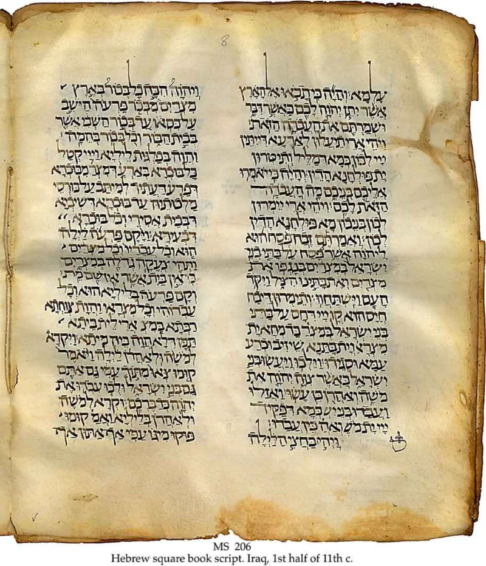
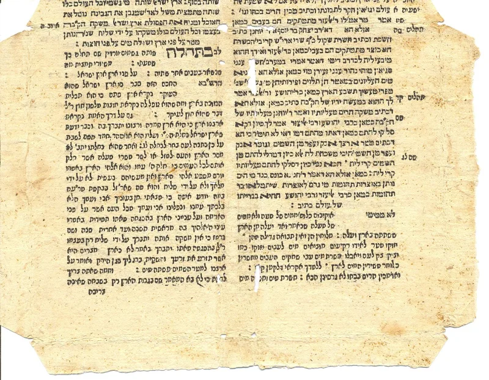

Jewish sources grant this themselves. You can make the point from their own books.
Isaiah 53 is in the Old Testament. It describes a man God calls "my servant." He is hated.
He is wounded. He is killed and buried.
Then, somehow, he lives and is satisfied. Christians have pointed at this chapter for two thousand years.
That the servant is the nation of Israel, not one man. Israel suffered at the hands of other nations.
So the chapter is about a people. This is the standard Jewish answer today, and it is a serious one.
That answer became standard fairly late — after Rashi, a French rabbi, around 1100 AD. Before him, major Jewish sources — Targum, Talmud, midrash — read it of the Messiah, though a collective reading of the servant as Israel also existed at least as early as Origen's day in the 3rd century AD.
The clearest example is the Targum, the old Aramaic version that was read aloud in synagogues. It begins: "Behold, my servant the Messiah shall prosper."
Very strong, because you are not using a Christian source. You are pointing at a Jewish one.
Your friend can look it up without trusting you at all.
It changes what kind of conversation you are having. You are not telling a Jewish person what their own book means.
You are asking a question about their own tradition. Those two things land completely differently.
"Have you ever read what the Targum says about Isaiah 53? I'd like to look at it with you."


Read whole, they say, those sources give Israel the pain and the Messiah the glory.
Rabbi Tovia Singer and Jews for Judaism say Christians quote only the helpful half. The Targum does give the servant's glory to the Messiah. But it hands all the suffering to Israel and the nations. Read whole, they say, it argues against a suffering Messiah rather than for one.
Passages like Sanhedrin 98b are aggadah. That means homily and wordplay, not careful study. Midrash often applies one verse to several figures at once. It does not settle what the verse plainly means.
And the great medieval commentators all read the servant as Israel: Rashi, Ibn Ezra and Radak. That fits Isaiah's own habit of calling Israel 'my servant' in Isaiah 41:8, Isaiah 44:1 and Isaiah 49:3. A tradition's sermons, they conclude, do not overturn its scholarship.
Conceded, but claim only that this reading is Jewish and old, not proof.
One narrow fact is agreed on all sides. Messianic readings of Isaiah 53 do exist in older Jewish writing. Some of them even have the Messiah suffer. What is argued about is how much weight they carry, not whether they are there.
So use the claim in exactly that shape. Not 'the rabbis agree with us.' Say instead that reading this chapter as one suffering Messiah is a Jewish option, and an old one. That is enough to move the conversation. It is also all the evidence supports. Overstate it and Tovia Singer has a correction ready.